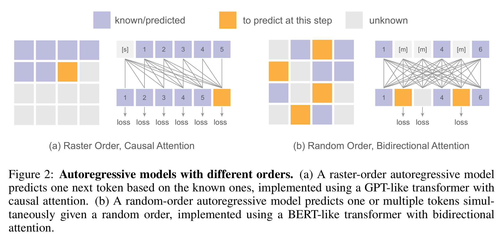
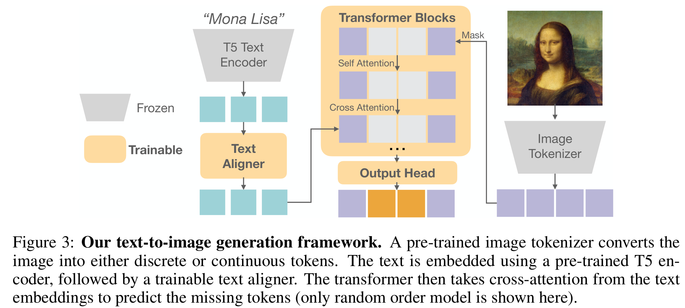
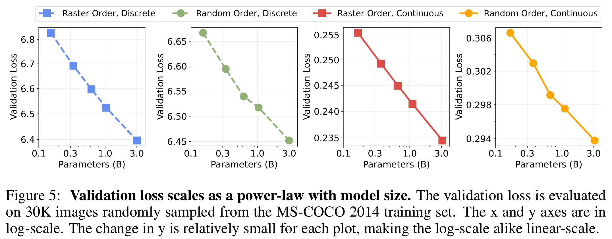
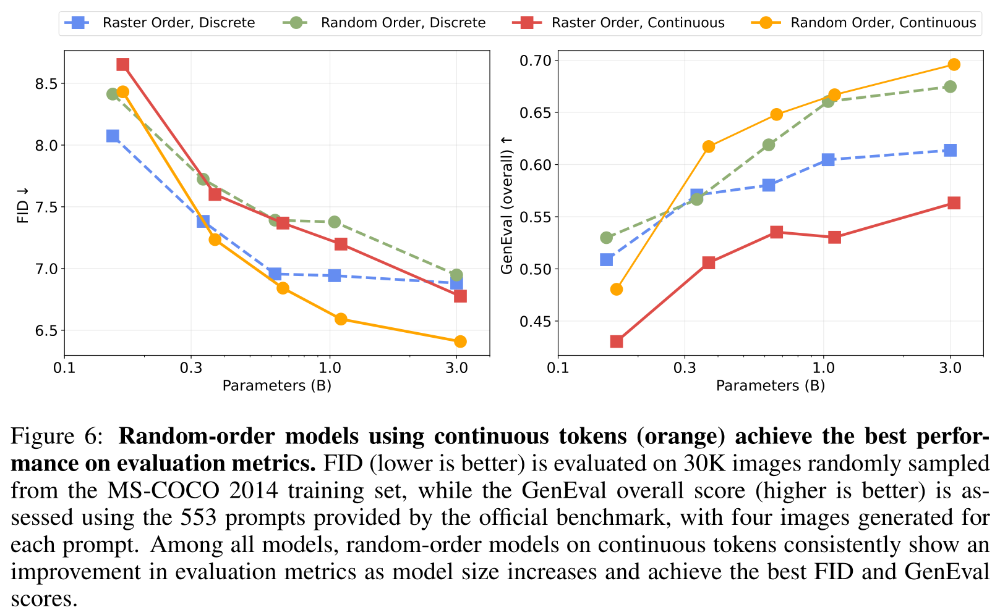
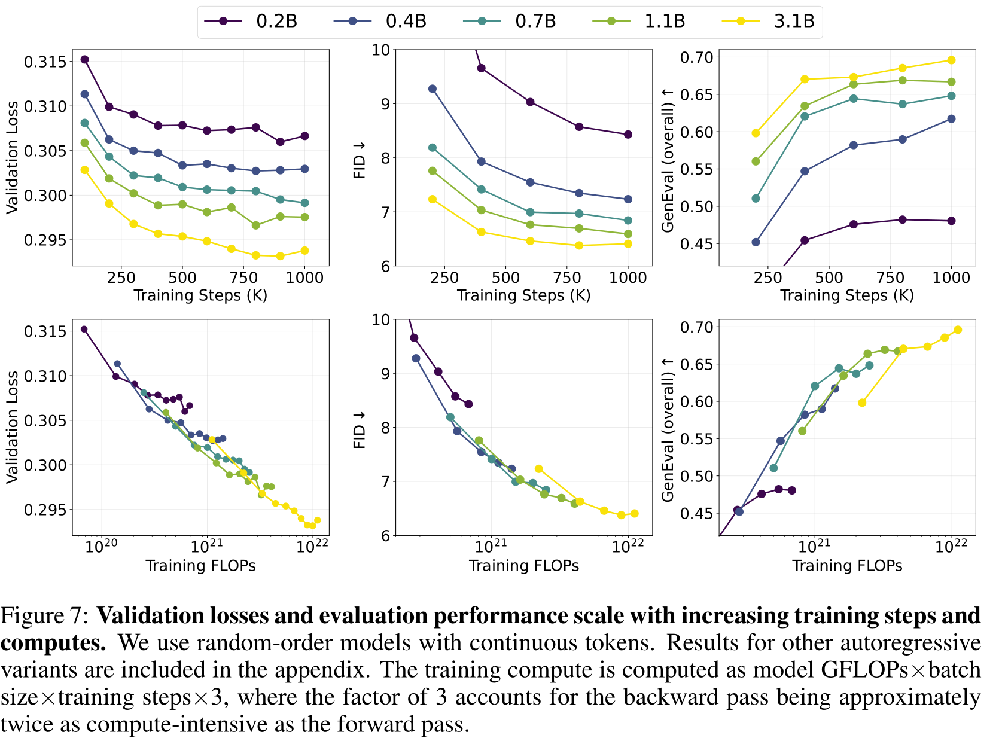
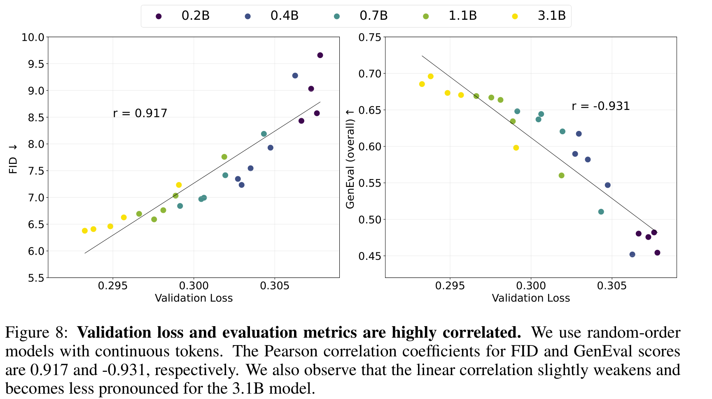
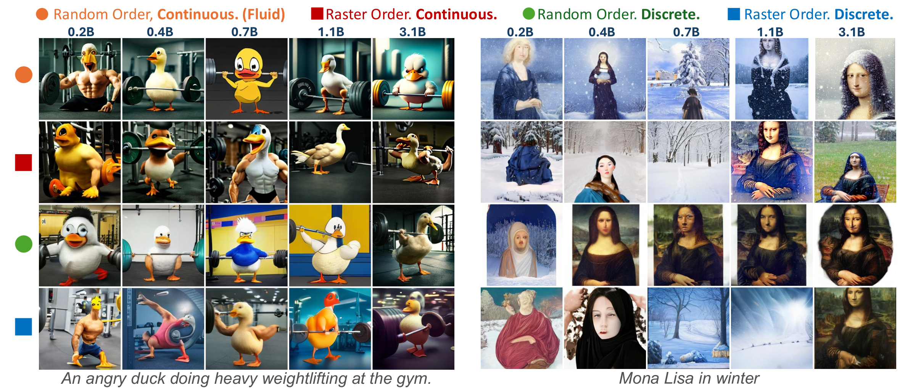
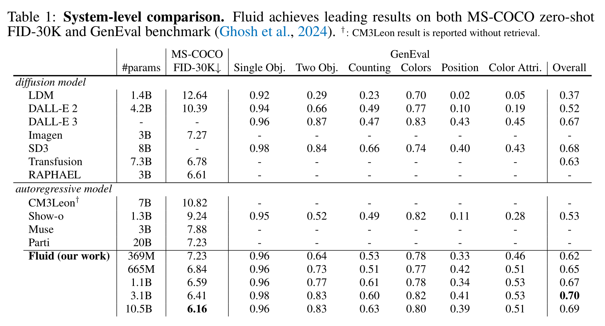

Introduction
探究问题（主要1和2）：
- 离散token还是连续token？连续顺序
- 生成token时是使用光栅顺序还是随机顺序？随机顺序
- 使用Bert还是Gpt样式的Transformer结构？Bert
需要考虑：
- vq(vector quantization) 会导致信息的损失, 从而限制模型的表现
- 不同于自然语言拥有固定的顺序，图像生成的顺序存在不确定性
- 在评估视觉模型中的规模法则时，通常会对两种普适性的层次产生混淆：
- 使用与训练损失相同的指标对新数据的泛化（通常称为验证损失）
- 定义：验证损失是指在训练过程中，使用与训练时相同的损失函数（如均方误差、交叉熵等）对模型进行评估，通常是在一个独立的验证集上进行。这个过程旨在衡量模型在新数据上的表现，即模型的泛化能力。
- 重要性：验证损失是评估模型是否过拟合或欠拟合的重要指标。通过监控验证损失，可以调整模型的复杂度或训练策略，以提高其泛化能力。
- 对与训练目标不同的新指标或问题的泛化
- 定义：这指的是模型在面对与训练目标不同的评估指标或任务时的表现。例如，FID（Fréchet Inception Distance）用于衡量生成图像与真实图像之间的相似度，GenEval基准用于评估生成图像的质量和多样性，而视觉质量则涉及图像的清晰度、细节保留等主观感受。
- 重要性：这些指标提供了对模型性能的更全面评估，尤其是在生成模型中。它们可以帮助识别模型在特定任务或指标上的弱点，并指导模型的进一步优化。
- 混淆的原因及影响
- 混淆这两种层次的泛化能力可能导致对模型性能的误解。例如，一个模型可能在验证损失上表现良好，但在FID或视觉质量等指标上表现不佳。这表明模型在训练数据上过拟合，或者在生成真实感图像方面存在问题。
- 解决方法
- 为了解决这种混淆，研究者需要进行全面的实证研究，评估模型在不同指标上的表现，并基于这些发现优化模型设计。例如，何恺明团队在他们的研究中提出了使用连续token和随机顺序生成的新模型Fluid，显著提高了模型在视觉质量和生成多样性方面的表现。
- 使用与训练损失相同的指标对新数据的泛化（通常称为验证损失）
Method

使用光栅顺序的GPT样式和使用随机顺序的BERT样式各有优缺点，GPT可以使用KV Cache，而BERT可以一次生成多个token。关于二者谁更适合生成图像，仍无定论，故这篇论文讨论二者的表现和Scaling law的效果
提一嘴RandAR和RAR，它们都是使用GPT样式的模型来实现随机顺序的生成，RandAR最后线性退火成了光栅顺序，而RAR则是直接使用随机顺序。
Implementation
Train

- 一个tokenizer将图像转换成tokens
- 离散tokens： tokenizer(VQGAN pretrained on the WebLI dataset)将图像(256256)转换成1616离散tokens, 词汇表大小8192;
- 连续tokens： tokenizer来自Stable Diffusion, 它将图像(256256)转换成3232的连续tokens，包含4个通道(channels), 为了保持和离散token长度的一致, 将22大小的patch压缩成一个token, tokens的大小就变成了1616, channels变成16
- 训练
- text encoder：通过SentencePiece tokenize, 然后用yige预训练的T5-XXL encoder嵌入。再通过由6个可训练的transformer块组成的文本对齐器对齐。
- 离散tokens：将部分tokens遮盖起来(mask),然后训练一个transformer基于文本重建这些被遮盖起来的tokens，这个过程用到了双向注意力
- 连续tokens：标准的只有decoder的transformer模型，每块有三层(self-attention, cross-attention, MLP:Multilayer Perceptron), 自注意力层和MLP只作用于图像tokens，交叉注意力层把视觉和文本token分别作为keys和querys
- 输出
- 离散：通过一个线性层后，输出被softmax函数转化为分类分布，而这个线性层的权重是从输入嵌入层中复用的。
- 连续：我们采用了一个六层的轻量级多层感知机（MLP）作为扩散头，来为每个token的分布建模。这个头的嵌入维度与主干transformer相同。每个标记的扩散过程遵循（Nichol & Dhariwal, 2021; Li et al., 2024）。噪声调度采用余弦形状，训练时有1000步；在推理时，它被重新采样为100步。
Experiments
Setup
- dataset
- 训练集：WebLI的子集，图像默认中心切割成256*256大小
- 训练
- AdamW优化器
- 使用AdamW优化器，参数为β1 = 0.9和β2 = 0.95。
- 应用权重衰减为0.02，以防止过拟合。
- 训练步数和批量大小：
- 模型训练100万步（1M steps）。
- 训练时使用的批量大小为2048。
- 训练轮次：
- 训练大致相当于在数据集上进行了3轮（epochs）。
- 学习率调度：
- 对于连续标记：采用恒定学习率调度。
- 65,000步的线性预热。
- 最大学习率为1 × 10⁻⁴。
- 对于离散标记：使用余弦学习率调度，因其表现更佳。
- 对于连续标记：采用恒定学习率调度。
- 随机顺序模型训练：
- 对于使用随机顺序输入训练的模型，掩码比例从[0, 1]中随机采样，采用余弦调度。
- 此过程遵循MaskGIT（Chang et al., 2022）的方法，对每张图像进行掩码处理。
- 指数移动平均（EMA）：
- 计算模型权重的指数移动平均，衰减率为0.9999。
- 这些EMA权重随后用于评估。
- AdamW优化器
- 推理：
- 图像生成过程：
- 遵循了Imagen (Saharia et al., 2022)、Muse (Chang et al., 2023)和Parti (Yu et al., 2022)的实践，从文本提示生成图像。
- 生成过程中未使用拒绝采样。
- 随机顺序模型：
- 使用64步进行图像生成，并采用余弦调度（遵循Chang et al., 2022的方法）。
- 性能提升：
- 应用温度调节和无分类器引导来进一步提升生成质量，这是该领域的常见做法。
- 图像生成过程：
- 评估：
- 定量评估：
- 定量和定性评估了不同自回归模型变体的扩展行为。
- 在MS-COCO 2014训练集的30K张图像上计算验证损失。
- 使用了两种广泛采用的指标：
- MS-COCO上的零样本Frechet Inception距离（FID）。
- GenEval分数（Ghosh et al., 2024）。
- FID计算：
- 在MS-COCO 2014训练集的30K个随机选择的图像-文本对上计算FID。
- FID评估生成图像的保真度（图像的真实性）和多样性（图像的丰富性）。
- GenEval基准测试：
- GenEval衡量模型生成图像是否准确反映给定提示的能力。
- 定性评估：
- 使用每个模型从多个文本提示生成图像。
- 比较生成图像的视觉质量，进行定性评估。
- 定量评估：
Scaling Behaviors

Figure 5：Loss和模型大小在log空间存在线性关系。

Figure 6: 在所有模型中，随机顺序模型在连续标记上的评估指标随着模型规模的增加而持续改善，并且获得了最佳的FID和GenEval分数。

Figure 7: 随着训练步数和计算量的增加，验证损失和评估性能都有一致的提升。然而，从额外的训练步数中获得的好处在大约100万步时趋于饱和，这表明与训练较大模型较少的步数相比，训练较小模型更多的步数的计算效率较低。这种行为与语言模型中的观察结果一致，突显出在足够的训练下扩大模型规模的潜力。

Figure 8: 作者绘制了不同模型规模的Fluid的FID和GenEval分数与验证损失之间的关系，并观察到强烈的相关性。为了量化这一点，作者使用线性回归拟合数据点。FID和GenEval分数的皮尔逊相关系数分别为0.917和-0.931，表明验证损失与这些评估指标之间存在几乎线性的关系，模型规模范围从150M到3B1。

